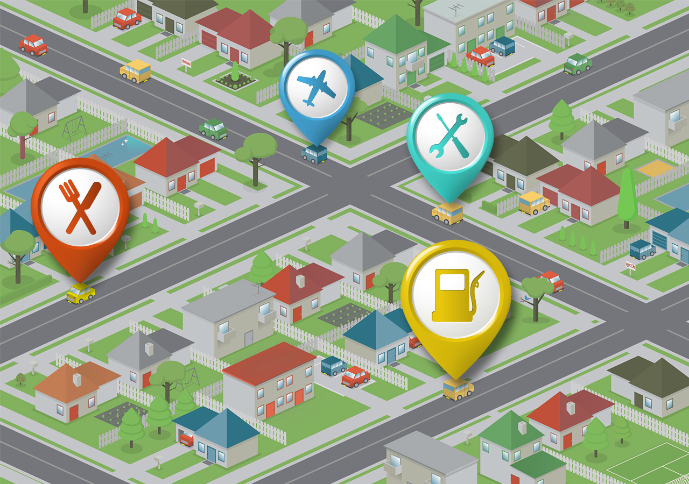
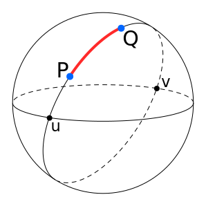
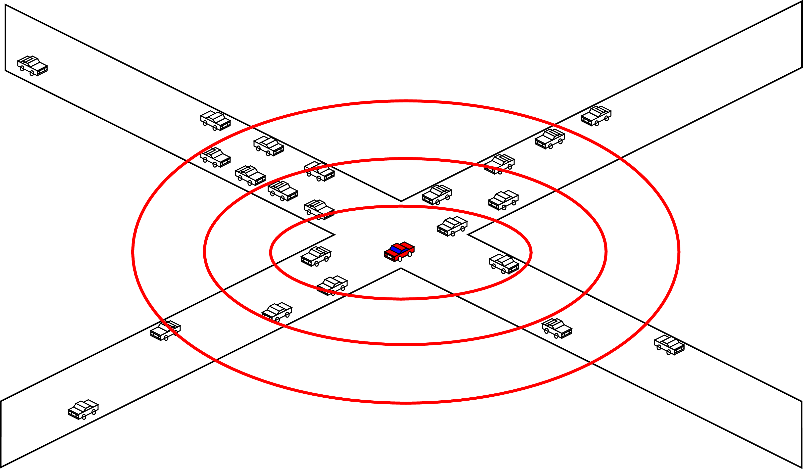
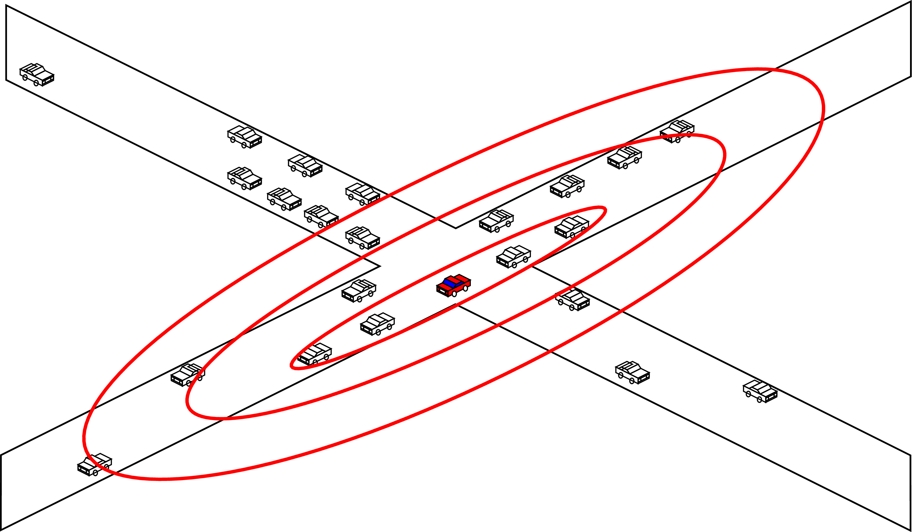
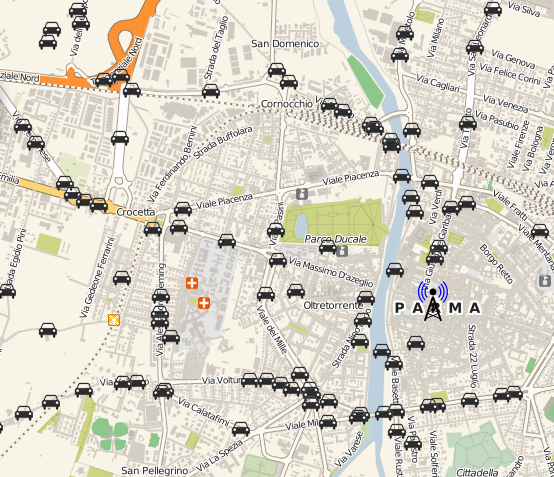

Distributed Systems Group - Università degli Studi di Parma
LSDVE 2016, Grenoble, 23 August 2016
In recent years, there has been a growing attention to Location-Based Services, i.e., software-level services that use location data to control features.
The majority of existing Location-Based Services lie on powerful and expensive centralized systems, that only a few large companies can afford.
Moreover, from the privacy viewpoint it is not advisable that all data are controlled by a single organization.
We decided to study a peer-to-peer overlay scheme that fulfills all the requirements that are essential to Location-Based Services.
Traditional peer-to-peer overlay schemes, such as Kademlia [1] or Chord [2], are not particularly suitable for Location-Based Services, since they completely ignore geographical distances between peers of the network.
[1] Petar Maymounkov and David Mazières: "Kademlia: A Peer-to-peer information system based on the XOR Metric", Lecture Notes in Computer Science, April 2002
[2] Robert Morris et al.: "Chord: A scalable peer-to-peer lookup service for internet applications", ACM SIGCOMM 2001, September 2001
| GeoPeer [3] | Globase.KOM [4] | Geodemlia [5] | Overdrive [6] | |
|---|---|---|---|---|
| Mobility of peers | ✓ | |||
| Speed and direction of peers | ✓ | |||
| Geographic broadcast | ✓ | ✓ | ✓ | ✓ |
| Completely peer-to-peer | ✓ | ✓ | ✓ | |
| Adaptive overlay scheme |
[3] Filipe Araújo and Luís Rodrigues: "Geopeer: A Location-Aware Peer-to-Peer System", Network Computing and Applications 2004, August 2004
[4] Aleksandra Kovacevic et al.: "Globase.KOM - A P2P Overlay for Fully Retrievable Location-based Search", IEEE International Conference on Peer-to-Peer Computing, September 2007
[5] Christian Gross et al.: "Geodemlia: Persistent Storage and Reliable Search for Peer-to-Peer Location-Based Services", IEEE International Conference on Peer-to-Peer Computing, September 2013
[6] Bernhard Heep et al.: "Overdrive an overlay-based geocast service for smart traffic applications", Wireless On-demand Network Systems and Services Conference, March 2013
| ADGT [7] | |
|---|---|
| Mobility of peers | ✓ |
| Speed and direction of peers | ✓ |
| Geographic broadcast | ✓ |
| Completely peer-to-peer | ✓ |
| Adaptive overlay scheme | ✓ |
The Adaptive Distributed Geographic Table (ADGT) is the only peer-to-peer overlay scheme that adapts the topology of the network based on peers' movements, speed and direction.
[7] Giacomo Brambilla et al.: "An Adaptive Peer-to-Peer Overlay Scheme for Location-Based Services", IEEE International Symposium on Network Computing and Applications, August 2014
Distance between peers $ p $ and $ q $ is evaluated as the great-circle distance, which is the shortest distance between two points on the surface of a sphere, measured along the surface of the sphere itself.
The neighbourhood of peer $ p $ is defined as the set of peers that are geographically close to $ w_{p} $, in other words, those peers which are located inside a geographical region surrounding $ w_{p} $.
Apart from ADGT, in the other peer-to-peer overlays the neighbourhood of a peer is within a circular region centered on its geographical location.
A vehicle moving slowly
along the streets of a small town
↓
interested in receiving information
from all the directions
A vehicle travelling along a highway
at high speed
↓
concerned with the information
that comes along its travel direction
The region of interest varies depending on the mobility of the vehicle
In ADGT, we have switched from the typical circular region of neighbourhood, to an elliptical one, where both the semi axes of the ellipse depend on the velocity of the peer, i.e., vary depending on the direction and speed of the peer.
The idea behind such elliptical regions is that the higher is the speed of the peer, the higher is the eccentricity of the ellipses.
Also, the direction of the semi-major axis coincides with the direction of movement of the peer.
In ADGT, each peer stores a set of lists of neighbours, called GeoBucket, each list being sorted according to the distance from the center that the GeoBuckets have in common.
Formally, a GeoBucket structure is defined as a group of $ K $ different concentric ellipses, each having a different semi-major axis $ a_{i} $ and semi-minor axis $ b_{i} $, with $ i $ integer $ \in [1, K] $.
ADGT has a peer discovery mechanism similar to the one adopted by Kademlia, that allows GeoBucket to be regularly updated in order to have the latest peers' geographical locations.
ADGT has been intensively evaluated through simulation in different scenarios of mobility, obtaining very promising results [7].
[7] Giacomo Brambilla et al.: "An Adaptive Peer-to-Peer Overlay Scheme for Location-Based Services", IEEE International Symposium on Network Computing and Applications, August 2014
The idea behind our implementation is the complete interoperability among devices as much as possible different – both from the hardware point of view, and in terms of installed software.
While initially web browsers were designed only to display information provided by web servers, they are becoming the real cross-platform technology, being able to truly realize the "write once, run everywhere" unfulfilled promise of Java related technologies.
WebRTC enables data streaming between browser clients without the need to install plugins or third-party software, implying a strong integration between the content presented by the browser and the real-time content.
With WebRTC, web browsers become peers of a real P2P network, being capable to exchange data in an unmediated fashion.
RTCPeerConnection hides all the complexities of WebRTC to web developers, allowing audio and video streaming using the Secure Real-Time Transport (SRTP) protocol, which is real-time, and provides encryption, message authentication and integrity to transmitted data.
Moreover RTCPeerConnection offers the Interactive Connectivity Establishment (ICE), a technique to overcome the complexities of real-world networking, where most devices live behind one or more NAT layers, some have anti-virus software that blocks certain ports and protocols, and many are behind proxies and corporate firewalls.
The RTCDataChannel interface works with RTCPeerConnection and allows to transfer arbitrary data directly from one peer to another, using the Stream Control Transmission Protocol (SCTP).
The WebSocket specification defines an API establishing an interactive communication session between a web browser and a server.
With this API, the client and the server can make a persistent full-duplex connection between them and send data to each other at any time.
The Geolocation API defines a high-level interface to location information associated with the device.
The API itself is agnostic of the underlying location information sources: location can be indiscriminately obtained from a Global Positioning System (GPS), inferred from network signals such as IP address, RFID, Wi-Fi and Bluetooth MAC addresses, and GSM/CDMA cell IDs, as well as user input.
The ADGT protocol has been implemented using web technologies only.
Our implementation, named adgt.js, has been designed as an ECMAScript 6 software library that can be freely used for the realization of P2P-based LBSs.
Signaling methods and protocols, i.e., the mechanisms required to coordinate communication and to send control messages, are not specified by WebRTC.
We have decided to distribute the responsibility to act as signaling servers among all the peers of the network, using DataChannels.
The peer discovery operation has been implemented in a way that when a peer receives the list of neighbors from the peer that has contacted, the latter acts also as a signaling server between the first and the possible peers which have to be contacted.
Since it is not always possibile to use another peer as a signaling server, e.g., when the peer joins the P2P network, we have implemented a signaling server using the Node.js framework and the WebSocket protocol.
To design and implement peer-to-peer LBSs with adgt.js is easy, not much different from making a simple web page.
var peer = new Peer(options);
peer.connect();
peer.on('neighbors', function(descriptors) {
//do something
});
peer.on('data', function(data) {
//do something
});
peer.send(data);
peer.move(position);
We have implemented a LBS that illustrates the ease of use of adgt.js and represents a building block for more sophisticated applications.
The LBS shows on a map the peers connected to the network, i.e., visitors of this web page, that are at a maximum distance of 40 km.
Neighbor discovery and connection establishment is entrusted to adgt.js
This LBS only requires to update the geographic location of the peer and change the marker on a map with the position of the browser obtained with the Geolocation API.
In addition, when a change in the neighborhood happens, all the markers on the map representing neighbors are updated.
adgt.js enables the realization of completely decentralized LBSs, being a cross-platform implementation of the ADGT georeferenced P2P overlay scheme.
In future work, we will investigate the performance of the implemented framework, with respect to technological aspects such as battery drain of mobile devices, also compared with previous results obtained in simulation.
Distributed Systems Group - Università degli Studi di Parma
LSDVE 2016, Grenoble, 23 August 2016